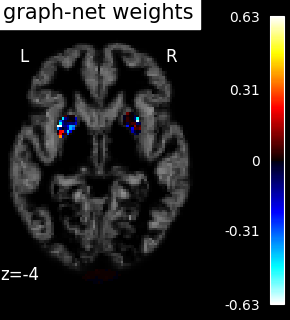
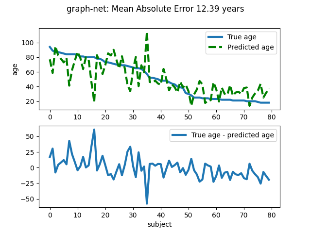

Note
Click here to download the full example code or to run this example in your browser via Binder
9.3.4. Voxel-Based Morphometry on Oasis dataset with Space-Net prior¶
Predicting age from gray-matter concentration maps from OASIS dataset. Note that age is a continuous variable, we use the regressor here, and not the classification object.
See also the documentation: SpaceNet: decoding with spatial structure for better maps.
9.3.4.1. Load the Oasis VBM dataset¶
import numpy as np
from nilearn import datasets
n_subjects = 200 # increase this number if you have more RAM on your box
dataset_files = datasets.fetch_oasis_vbm(n_subjects=n_subjects)
age = dataset_files.ext_vars['age'].astype(float)
age = np.array(age)
gm_imgs = np.array(dataset_files.gray_matter_maps)
# Split data into training set and test set
from sklearn.utils import check_random_state
from sklearn.model_selection import train_test_split
rng = check_random_state(42)
gm_imgs_train, gm_imgs_test, age_train, age_test = train_test_split(
gm_imgs, age, train_size=.6, random_state=rng)
# Sort test data for better visualization (trend, etc.)
perm = np.argsort(age_test)[::-1]
age_test = age_test[perm]
gm_imgs_test = gm_imgs_test[perm]
Out:
/home/circleci/miniconda3/envs/testenv/lib/python3.8/site-packages/numpy/lib/npyio.py:2407: VisibleDeprecationWarning:
Reading unicode strings without specifying the encoding argument is deprecated. Set the encoding, use None for the system default.
9.3.4.2. Fit the SpaceNet and predict with it¶
To save time (because these are anat images with many voxels), we include only the 5-percent voxels most correlated with the age variable to fit. Also, we set memory_level=2 so that more of the intermediate computations are cached. We used a graph-net penalty here but more beautiful results can be obtained using the TV-l1 penalty, at the expense of longer runtimes. Also, you may pass and n_jobs=<some_high_value> to the SpaceNetRegressor class, to take advantage of a multi-core system.
from nilearn.decoding import SpaceNetRegressor
decoder = SpaceNetRegressor(memory="nilearn_cache", penalty="graph-net",
screening_percentile=5., memory_level=2)
decoder.fit(gm_imgs_train, age_train) # fit
coef_img = decoder.coef_img_
y_pred = decoder.predict(gm_imgs_test).ravel() # predict
mse = np.mean(np.abs(age_test - y_pred))
print('Mean square error (MSE) on the predicted age: %.2f' % mse)
Out:
[NiftiMasker.fit] Loading data from [/home/circleci/nilearn_data/oasis1/OAS1_0003_MR1/mwrc1OAS1_0003_MR1_mpr_anon_fslswapdim_bet.nii.gz,
/home/circleci/nilearn_data/oasis1/OAS1_0086_MR1/mwrc1OAS1_0086_MR1_mpr_anon_fslswapdim_bet.nii.gz,
/home/circleci/nilearn_data/oasis1/OAS1_0052_MR1/mwrc1OAS1_0052_MR1_mpr_anon_fslswapdim_bet.nii.gz,
/home/circleci/nilearn_data/oasis1/OAS1_0211_MR1/mwrc1OAS1_0211_MR1_mpr_anon_fslswapdim_bet.nii.gz,
/home/circleci/nilearn_data/oasis1/OAS1_0216_MR1/mwrc1OAS1_0216_MR1_mpr_anon_fslswapdim_bet.nii.gz,
/home/circleci/nilearn_data/oasis1/OAS1_0096_MR1/mwrc1OAS1_0096_MR1_mpr_anon_fslswapdim_bet.nii.gz,
/home/circleci/nilearn_data/oasis1/OAS1_0182_MR1/mwrc1OAS1_0182_MR1_mpr_anon_fslswapdim_bet.nii.gz,
/home/circleci/nilearn_data/oasis1/OAS1_0041_MR1/mwrc1OAS1_0041_MR1_mpr_anon_fslswapdim_bet.nii.gz,
/home/circleci/nilearn_data/oasis1/OAS1_0214_MR1/mwrc1OAS1_0214_MR1_mpr_anon_fslswapdim_bet.nii.gz,
/home/circleci/nilearn_data/oasis1/OAS1_0069_MR1/mwrc1OAS1_0069_MR1_mpr_anon_fslswapdim_bet.nii.gz,
/home/circleci/nilearn_data/oasis1/OAS1_0025_MR1/mwrc1OAS1_0025_MR1_mpr_anon_fslswapdim_bet.nii.gz,
/home/circleci/nilearn_data/oasis1/OAS1_0159_MR1/mwrc1OAS1_0159_MR1_mpr_anon_fslswapdim_bet.nii.gz,
/home/circleci/nilearn_data/oasis1/OAS1_0113_MR1/mwrc1OAS1_0113_MR1_mpr_anon_fslswapdim_bet.nii.gz,
/home/circleci/nilearn_data/oasis1/OAS1_0038_MR1/mwrc1OAS1_0038_MR1_mpr_anon_fslswapdim_bet.nii.gz,
/home/circleci/nilearn_data/oasis1/OAS1_0013_MR1/mwrc1OAS1_0013_MR1_mpr_anon_fslswapdim_bet.nii.gz,
/home/circleci/nilearn_data/oasis1/OAS1_0220_MR1/mwrc1OAS1_0220_MR1_mpr_anon_fslswapdim_bet.nii.gz,
/home/circleci/nilearn_data/oasis1/OAS1_0180_MR1/mwrc1OAS1_0180_MR1_mpr_anon_fslswapdim_bet.nii.gz,
/home/circleci/nilearn_data/oasis1/OAS1_0007_MR1/mwrc1OAS1_0007_MR1_mpr_anon_fslswapdim_bet.nii.gz,
/home/circleci/nilearn_data/oasis1/OAS1_0031_MR1/mwrc1OAS1_0031_MR1_mpr_anon_fslswapdim_bet.nii.gz,
/home/circleci/nilearn_data/oasis1/OAS1_0135_MR1/mwrc1OAS1_0135_MR1_mpr_anon_fslswapdim_bet.nii.gz,
/home/circleci/nilearn_data/oasis1/OAS1_0005_MR1/mwrc1OAS1_0005_MR1_mpr_anon_fslswapdim_bet.nii.gz,
/home/circleci/nilearn_data/oasis1/OAS1_0037_MR1/mwrc1OAS1_0037_MR1_mpr_anon_fslswapdim_bet.nii.gz,
/home/circleci/nilearn_data/oasis1/OAS1_0160_MR1/mwrc1OAS1_0160_MR1_mpr_anon_fslswapdim_bet.nii.gz,
/home/circleci/nilearn_data/oasis1/OAS1_0163_MR1/mwrc1OAS1_0163_MR1_mpr_anon_fslswapdim_bet.nii.gz,
/home/circleci/nilearn_data/oasis1/OAS1_0123_MR1/mwrc1OAS1_0123_MR1_mpr_anon_fslswapdim_bet.nii.gz,
/home/circleci/nilearn_data/oasis1/OAS1_0162_MR1/mwrc1OAS1_0162_MR1_mpr_anon_fslswapdim_bet.nii.gz,
/home/circleci/nilearn_data/oasis1/OAS1_0012_MR1/mwrc1OAS1_0012_MR1_mpr_anon_fslswapdim_bet.nii.gz,
/home/circleci/nilearn_data/oasis1/OAS1_0070_MR1/mwrc1OAS1_0070_MR1_mpr_anon_fslswapdim_bet.nii.gz,
/home/circleci/nilearn_data/oasis1/OAS1_0126_MR1/mwrc1OAS1_0126_MR1_mpr_anon_fslswapdim_bet.nii.gz,
/home/circleci/nilearn_data/oasis1/OAS1_0164_MR1/mwrc1OAS1_0164_MR1_mpr_anon_fslswapdim_bet.nii.gz,
/home/circleci/nilearn_data/oasis1/OAS1_0188_MR1/mwrc1OAS1_0188_MR1_mpr_anon_fslswapdim_bet.nii.gz,
/home/circleci/nilearn_data/oasis1/OAS1_0001_MR1/mwrc1OAS1_0001_MR1_mpr_anon_fslswapdim_bet.nii.gz,
/home/circleci/nilearn_data/oasis1/OAS1_0226_MR1/mwrc1OAS1_0226_MR1_mpr_anon_fslswapdim_bet.nii.gz,
/home/circleci/nilearn_data/oasis1/OAS1_0173_MR1/mwrc1OAS1_0173_MR1_mpr_anon_fslswapdim_bet.nii.gz,
/home/circleci/nilearn_data/oasis1/OAS1_0078_MR1/mwrc1OAS1_0078_MR1_mpr_anon_fslswapdim_bet.nii.gz,
/home/circleci/nilearn_data/oasis1/OAS1_0138_MR1/mwrc1OAS1_0138_MR1_mpr_anon_fslswapdim_bet.nii.gz,
/home/circleci/nilearn_data/oasis1/OAS1_0072_MR1/mwrc1OAS1_0072_MR1_mpr_anon_fslswapdim_bet.nii.gz,
/home/circleci/nilearn_data/oasis1/OAS1_0050_MR1/mwrc1OAS1_0050_MR1_mpr_anon_fslswapdim_bet.nii.gz,
/home/circleci/nilearn_data/oasis1/OAS1_0184_MR1/mwrc1OAS1_0184_MR1_mpr_anon_fslswapdim_bet.nii.gz,
/home/circleci/nilearn_data/oasis1/OAS1_0032_MR1/mwrc1OAS1_0032_MR1_mpr_anon_fslswapdim_bet.nii.gz,
/home/circleci/nilearn_data/oasis1/OAS1_0045_MR1/mwrc1OAS1_0045_MR1_mpr_anon_fslswapdim_bet.nii.gz,
/home/circleci/nilearn_data/oasis1/OAS1_0121_MR1/mwrc1OAS1_0121_MR1_mpr_anon_fslswapdim_bet.nii.gz,
/home/circleci/nilearn_data/oasis1/OAS1_0176_MR1/mwrc1OAS1_0176_MR1_mpr_anon_fslswapdim_bet.nii.gz,
/home/circleci/nilearn_data/oasis1/OAS1_0177_MR1/mwrc1OAS1_0177_MR1_mpr_anon_fslswapdim_bet.nii.gz,
/home/circleci/nilearn_data/oasis1/OAS1_0029_MR1/mwrc1OAS1_0029_MR1_mpr_anon_fslswapdim_bet.nii.gz,
/home/circleci/nilearn_data/oasis1/OAS1_0026_MR1/mwrc1OAS1_0026_MR1_mpr_anon_fslswapdim_bet.nii.gz,
/home/circleci/nilearn_data/oasis1/OAS1_0208_MR1/mwrc1OAS1_0208_MR1_mpr_anon_fslswapdim_bet.nii.gz,
/home/circleci/nilearn_data/oasis1/OAS1_0165_MR1/mwrc1OAS1_0165_MR1_mpr_anon_fslswapdim_bet.nii.gz,
/home/circleci/nilearn_data/oasis1/OAS1_0091_MR1/mwrc1OAS1_0091_MR1_mpr_anon_fslswapdim_bet.nii.gz,
/home/circleci/nilearn_data/oasis1/OAS1_0044_MR1/mwrc1OAS1_0044_MR1_mpr_anon_fslswapdim_bet.nii.gz,
/home/circleci/nilearn_data/oasis1/OAS1_0190_MR1/mwrc1OAS1_0190_MR1_mpr_anon_fslswapdim_bet.nii.gz,
/home/circleci/nilearn_data/oasis1/OAS1_0053_MR1/mwrc1OAS1_0053_MR1_mpr_anon_fslswapdim_bet.nii.gz,
/home/circleci/nilearn_data/oasis1/OAS1_0106_MR1/mwrc1OAS1_0106_MR1_mpr_anon_fslswapdim_bet.nii.gz,
/home/circleci/nilearn_data/oasis1/OAS1_0174_MR1/mwrc1OAS1_0174_MR1_mpr_anon_fslswapdim_bet.nii.gz,
/home/circleci/nilearn_data/oasis1/OAS1_0049_MR1/mwrc1OAS1_0049_MR1_mpr_anon_fslswapdim_bet.nii.gz,
/home/circleci/nilearn_data/oasis1/OAS1_0155_MR1/mwrc1OAS1_0155_MR1_mpr_anon_fslswapdim_bet.nii.gz,
/home/circleci/nilearn_data/oasis1/OAS1_0004_MR1/mwrc1OAS1_0004_MR1_mpr_anon_fslswapdim_bet.nii.gz,
/home/circleci/nilearn_data/oasis1/OAS1_0117_MR1/mwrc1OAS1_0117_MR1_mpr_anon_fslswapdim_bet.nii.gz,
/home/circleci/nilearn_data/oasis1/OAS1_0060_MR1/mwrc1OAS1_0060_MR1_mpr_anon_fslswapdim_bet.nii.gz,
/home/circleci/nilearn_data/oasis1/OAS1_0148_MR1/mwrc1OAS1_0148_MR1_mpr_anon_fslswapdim_bet.nii.gz,
/home/circleci/nilearn_data/oasis1/OAS1_0204_MR1/mwrc1OAS1_0204_MR1_mpr_anon_fslswapdim_bet.nii.gz,
/home/circleci/nilearn_data/oasis1/OAS1_0202_MR1/mwrc1OAS1_0202_MR1_mpr_anon_fslswapdim_bet.nii.gz,
/home/circleci/nilearn_data/oasis1/OAS1_0209_MR1/mwrc1OAS1_0209_MR1_mpr_anon_fslswapdim_bet.nii.gz,
/home/circleci/nilearn_data/oasis1/OAS1_0055_MR1/mwrc1OAS1_0055_MR1_mpr_anon_fslswapdim_bet.nii.gz,
/home/circleci/nilearn_data/oasis1/OAS1_0090_MR1/mwrc1OAS1_0090_MR1_mpr_anon_fslswapdim_bet.nii.gz,
/home/circleci/nilearn_data/oasis1/OAS1_0039_MR1/mwrc1OAS1_0039_MR1_mpr_anon_fslswapdim_bet.nii.gz,
/home/circleci/nilearn_data/oasis1/OAS1_0009_MR1/mwrc1OAS1_0009_MR1_mpr_anon_fslswapdim_bet.nii.gz,
/home/circleci/nilearn_data/oasis1/OAS1_0124_MR1/mwrc1OAS1_0124_MR1_mpr_anon_fslswapdim_bet.nii.gz,
/home/circleci/nilearn_data/oasis1/OAS1_0103_MR1/mwrc1OAS1_0103_MR1_mpr_anon_fslswapdim_bet.nii.gz,
/home/circleci/nilearn_data/oasis1/OAS1_0094_MR1/mwrc1OAS1_0094_MR1_mpr_anon_fslswapdim_bet.nii.gz,
/home/circleci/nilearn_data/oasis1/OAS1_0200_MR1/mwrc1OAS1_0200_MR1_mpr_anon_fslswapdim_bet.nii.gz,
/home/circleci/nilearn_data/oasis1/OAS1_0205_MR1/mwrc1OAS1_0205_MR1_mpr_anon_fslswapdim_bet.nii.gz,
/home/circleci/nilearn_data/oasis1/OAS1_0101_MR1/mwrc1OAS1_0101_MR1_mpr_anon_fslswapdim_bet.nii.gz,
/home/circleci/nilearn_data/oasis1/OAS1_0010_MR1/mwrc1OAS1_0010_MR1_mpr_anon_fslswapdim_bet.nii.gz,
/home/circleci/nilearn_data/oasis1/OAS1_0015_MR1/mwrc1OAS1_0015_MR1_mpr_anon_fslswapdim_bet.nii.gz,
/home/circleci/nilearn_data/oasis1/OAS1_0067_MR1/mwrc1OAS1_0067_MR1_mpr_anon_fslswapdim_bet.nii.gz,
/home/circleci/nilearn_data/oasis1/OAS1_0193_MR1/mwrc1OAS1_0193_MR1_mpr_anon_fslswapdim_bet.nii.gz,
/home/circleci/nilearn_data/oasis1/OAS1_0146_MR1/mwrc1OAS1_0146_MR1_mpr_anon_fslswapdim_bet.nii.gz,
/home/circleci/nilearn_data/oasis1/OAS1_0019_MR1/mwrc1OAS1_0019_MR1_mpr_anon_fslswapdim_bet.nii.gz,
/home/circleci/nilearn_data/oasis1/OAS1_0080_MR1/mwrc1OAS1_0080_MR1_mpr_anon_fslswapdim_bet.nii.gz,
/home/circleci/nilearn_data/oasis1/OAS1_0199_MR1/mwrc1OAS1_0199_MR1_mpr_anon_fslswapdim_bet.nii.gz,
/home/circleci/nilearn_data/oasis1/OAS1_0150_MR1/mwrc1OAS1_0150_MR1_mpr_anon_fslswapdim_bet.nii.gz,
/home/circleci/nilearn_data/oasis1/OAS1_0189_MR1/mwrc1OAS1_0189_MR1_mpr_anon_fslswapdim_bet.nii.gz,
/home/circleci/nilearn_data/oasis1/OAS1_0207_MR1/mwrc1OAS1_0207_MR1_mpr_anon_fslswapdim_bet.nii.gz,
/home/circleci/nilearn_data/oasis1/OAS1_0071_MR1/mwrc1OAS1_0071_MR1_mpr_anon_fslswapdim_bet.nii.gz,
/home/circleci/nilearn_data/oasis1/OAS1_0061_MR1/mwrc1OAS1_0061_MR1_mpr_anon_fslswapdim_bet.nii.gz,
/home/circleci/nilearn_data/oasis1/OAS1_0120_MR1/mwrc1OAS1_0120_MR1_mpr_anon_fslswapdim_bet.nii.gz,
/home/circleci/nilearn_data/oasis1/OAS1_0056_MR1/mwrc1OAS1_0056_MR1_mpr_anon_fslswapdim_bet.nii.gz,
/home/circleci/nilearn_data/oasis1/OAS1_0223_MR1/mwrc1OAS1_0223_MR1_mpr_anon_fslswapdim_bet.nii.gz,
/home/circleci/nilearn_data/oasis1/OAS1_0065_MR1/mwrc1OAS1_0065_MR1_mpr_anon_fslswapdim_bet.nii.gz,
/home/circleci/nilearn_data/oasis1/OAS1_0054_MR1/mwrc1OAS1_0054_MR1_mpr_anon_fslswapdim_bet.nii.gz,
/home/circleci/nilearn_data/oasis1/OAS1_0099_MR1/mwrc1OAS1_0099_MR1_mpr_anon_fslswapdim_bet.nii.gz,
/home/circleci/nilearn_data/oasis1/OAS1_0023_MR1/mwrc1OAS1_0023_MR1_mpr_anon_fslswapdim_bet.nii.gz,
/home/circleci/nilearn_data/oasis1/OAS1_0064_MR1/mwrc1OAS1_0064_MR1_mpr_anon_fslswapdim_bet.nii.gz,
/home/circleci/nilearn_data/oasis1/OAS1_0181_MR1/mwrc1OAS1_0181_MR1_mpr_anon_fslswapdim_bet.nii.gz,
/home/circleci/nilearn_data/oasis1/OAS1_0217_MR1/mwrc1OAS1_0217_MR1_mpr_anon_fslswapdim_bet.nii.gz,
/home/circleci/nilearn_data/oasis1/OAS1_0144_MR1/mwrc1OAS1_0144_MR1_mpr_anon_fslswapdim_bet.nii.gz,
/home/circleci/nilearn_data/oasis1/OAS1_0042_MR1/mwrc1OAS1_0042_MR1_mpr_anon_fslswapdim_bet.nii.gz,
/home/circleci/nilearn_data/oasis1/OAS1_0178_MR1/mwrc1OAS1_0178_MR1_mpr_anon_fslswapdim_bet.nii.gz,
/home/circleci/nilearn_data/oasis1/OAS1_0218_MR1/mwrc1OAS1_0218_MR1_mpr_anon_fslswapdim_bet.nii.gz,
/home/circleci/nilearn_data/oasis1/OAS1_0002_MR1/mwrc1OAS1_0002_MR1_mpr_anon_fslswapdim_bet.nii.gz,
/home/circleci/nilearn_data/oasis1/OAS1_0059_MR1/mwrc1OAS1_0059_MR1_mpr_anon_fslswapdim_bet.nii.gz,
/home/circleci/nilearn_data/oasis1/OAS1_0167_MR1/mwrc1OAS1_0167_MR1_mpr_anon_fslswapdim_bet.nii.gz,
/home/circleci/nilearn_data/oasis1/OAS1_0145_MR1/mwrc1OAS1_0145_MR1_mpr_anon_fslswapdim_bet.nii.gz,
/home/circleci/nilearn_data/oasis1/OAS1_0169_MR1/mwrc1OAS1_0169_MR1_mpr_anon_fslswapdim_bet.nii.gz,
/home/circleci/nilearn_data/oasis1/OAS1_0115_MR1/mwrc1OAS1_0115_MR1_mpr_anon_fslswapdim_bet.nii.gz,
/home/circleci/nilearn_data/oasis1/OAS1_0111_MR1/mwrc1OAS1_0111_MR1_mpr_anon_fslswapdim_bet.nii.gz,
/home/circleci/nilearn_data/oasis1/OAS1_0131_MR1/mwrc1OAS1_0131_MR1_mpr_anon_fslswapdim_bet.nii.gz,
/home/circleci/nilearn_data/oasis1/OAS1_0098_MR1/mwrc1OAS1_0098_MR1_mpr_anon_fslswapdim_bet.nii.gz,
/home/circleci/nilearn_data/oasis1/OAS1_0082_MR1/mwrc1OAS1_0082_MR1_mpr_anon_fslswapdim_bet.nii.gz,
/home/circleci/nilearn_data/oasis1/OAS1_0136_MR1/mwrc1OAS1_0136_MR1_mpr_anon_fslswapdim_bet.nii.gz,
/home/circleci/nilearn_data/oasis1/OAS1_0227_MR1/mwrc1OAS1_0227_MR1_mpr_anon_fslswapdim_bet.nii.gz,
/home/circleci/nilearn_data/oasis1/OAS1_0022_MR1/mwrc1OAS1_0022_MR1_mpr_anon_fslswapdim_bet.nii.gz,
/home/circleci/nilearn_data/oasis1/OAS1_0212_MR1/mwrc1OAS1_0212_MR1_mpr_anon_fslswapdim_bet.nii.gz,
/home/circleci/nilearn_data/oasis1/OAS1_0079_MR1/mwrc1OAS1_0079_MR1_mpr_anon_fslswapdim_bet.nii.gz,
/home/circleci/nilearn_data/oasis1/OAS1_0119_MR1/mwrc1OAS1_0119_MR1_mpr_anon_fslswapdim_bet.nii.gz,
/home/circleci/nilearn_data/oasis1/OAS1_0016_MR1/mwrc1OAS1_0016_MR1_mpr_anon_fslswapdim_bet.nii.gz,
/home/circleci/nilearn_data/oasis1/OAS1_0104_MR1/mwrc1OAS1_0104_MR1_mpr_anon_fslswapdim_bet.nii.gz,
/home/circleci/nilearn_data/oasis1/OAS1_0203_MR1/mwrc1OAS1_0203_MR1_mpr_anon_fslswapdim_bet.nii.gz,
/home/circleci/nilearn_data/oasis1/OAS1_0114_MR1/mwrc1OAS1_0114_MR1_mpr_anon_fslswapdim_bet.nii.gz]
[NiftiMasker.fit] Computing the mask
[NiftiMasker.fit] Resampling mask
[NiftiMasker.transform_single_imgs] Loading data from Nifti1Image(
shape=(91, 109, 91, 120),
affine=array([[ -2., 0., 0., 90.],
[ 0., 2., 0., -126.],
[ 0., 0., 2., -72.],
[ 0., 0., 0., 1.]])
)
[NiftiMasker.transform_single_imgs] Extracting region signals
[NiftiMasker.transform_single_imgs] Cleaning extracted signals
/home/circleci/miniconda3/envs/testenv/lib/python3.8/site-packages/nilearn/decoding/space_net.py:836: UserWarning:
Brain mask is bigger than the volume of a standard human brain. This object is probably not tuned to be used on such data.
[Parallel(n_jobs=1)]: Using backend SequentialBackend with 1 concurrent workers.
________________________________________________________________________________
[Memory] Calling nilearn.decoding.space_net.path_scores...
path_scores(<function _graph_net_squared_loss at 0x7f39e430f5e0>, array([[0., ..., 0.],
...,
[0., ..., 0.]]), array([73., ..., 62.]), array([[[ True, ..., True],
...,
[ True, ..., True]],
...,
[[ True, ..., True],
...,
[ True, ..., True]]]),
None, [0.5], array([ 15, ..., 119]), array([ 0, 1, 2, 3, 4, 5, 6, 7, 8, 9, 10, 11, 12, 13, 14]), {'max_iter': 200, 'tol': 0.0001}, n_alphas=10, eps=0.001, is_classif=False, key=(0, 0), debias=False, verbose=1, screening_percentile=1.2652228933482088)
........./home/circleci/miniconda3/envs/testenv/lib/python3.8/site-packages/joblib/parallel.py:262: UserWarning:
Persisting input arguments took 1.19s to run.
If this happens often in your code, it can cause performance problems
(results will be correct in all cases).
The reason for this is probably some large input arguments for a wrapped
function (e.g. large strings).
THIS IS A JOBLIB ISSUE. If you can, kindly provide the joblib's team with an
example so that they can fix the problem.
_____________________________________________________path_scores - 15.9s, 0.3min
[Parallel(n_jobs=1)]: Done 1 out of 1 | elapsed: 18.3s remaining: 0.0s
________________________________________________________________________________
[Memory] Calling nilearn.decoding.space_net.path_scores...
path_scores(<function _graph_net_squared_loss at 0x7f39e430f5e0>, array([[0., ..., 0.],
...,
[0., ..., 0.]]), array([73., ..., 62.]), array([[[ True, ..., True],
...,
[ True, ..., True]],
...,
[[ True, ..., True],
...,
[ True, ..., True]]]),
None, [0.5], array([ 0, ..., 119]), array([15, 16, 17, 18, 19, 20, 21, 22, 23, 24, 25, 26, 27, 28, 29]), {'max_iter': 200, 'tol': 0.0001}, n_alphas=10, eps=0.001, is_classif=False, key=(0, 1), debias=False, verbose=1, screening_percentile=1.2652228933482088)
........./home/circleci/miniconda3/envs/testenv/lib/python3.8/site-packages/joblib/parallel.py:262: UserWarning:
Persisting input arguments took 1.19s to run.
If this happens often in your code, it can cause performance problems
(results will be correct in all cases).
The reason for this is probably some large input arguments for a wrapped
function (e.g. large strings).
THIS IS A JOBLIB ISSUE. If you can, kindly provide the joblib's team with an
example so that they can fix the problem.
_____________________________________________________path_scores - 15.4s, 0.3min
________________________________________________________________________________
[Memory] Calling nilearn.decoding.space_net.path_scores...
path_scores(<function _graph_net_squared_loss at 0x7f39e430f5e0>, array([[0., ..., 0.],
...,
[0., ..., 0.]]), array([73., ..., 62.]), array([[[ True, ..., True],
...,
[ True, ..., True]],
...,
[[ True, ..., True],
...,
[ True, ..., True]]]),
None, [0.5], array([ 0, ..., 119]), array([30, 31, 32, 33, 34, 35, 36, 37, 38, 39, 40, 41, 42, 43, 44]), {'max_iter': 200, 'tol': 0.0001}, n_alphas=10, eps=0.001, is_classif=False, key=(0, 2), debias=False, verbose=1, screening_percentile=1.2652228933482088)
........./home/circleci/miniconda3/envs/testenv/lib/python3.8/site-packages/joblib/parallel.py:262: UserWarning:
Persisting input arguments took 1.19s to run.
If this happens often in your code, it can cause performance problems
(results will be correct in all cases).
The reason for this is probably some large input arguments for a wrapped
function (e.g. large strings).
THIS IS A JOBLIB ISSUE. If you can, kindly provide the joblib's team with an
example so that they can fix the problem.
_____________________________________________________path_scores - 15.8s, 0.3min
________________________________________________________________________________
[Memory] Calling nilearn.decoding.space_net.path_scores...
path_scores(<function _graph_net_squared_loss at 0x7f39e430f5e0>, array([[0., ..., 0.],
...,
[0., ..., 0.]]), array([73., ..., 62.]), array([[[ True, ..., True],
...,
[ True, ..., True]],
...,
[[ True, ..., True],
...,
[ True, ..., True]]]),
None, [0.5], array([ 0, ..., 119]), array([45, 46, 47, 48, 49, 50, 51, 52, 53, 54, 55, 56, 57, 58, 59]), {'max_iter': 200, 'tol': 0.0001}, n_alphas=10, eps=0.001, is_classif=False, key=(0, 3), debias=False, verbose=1, screening_percentile=1.2652228933482088)
........./home/circleci/miniconda3/envs/testenv/lib/python3.8/site-packages/joblib/parallel.py:262: UserWarning:
Persisting input arguments took 1.19s to run.
If this happens often in your code, it can cause performance problems
(results will be correct in all cases).
The reason for this is probably some large input arguments for a wrapped
function (e.g. large strings).
THIS IS A JOBLIB ISSUE. If you can, kindly provide the joblib's team with an
example so that they can fix the problem.
_____________________________________________________path_scores - 15.8s, 0.3min
________________________________________________________________________________
[Memory] Calling nilearn.decoding.space_net.path_scores...
path_scores(<function _graph_net_squared_loss at 0x7f39e430f5e0>, array([[0., ..., 0.],
...,
[0., ..., 0.]]), array([73., ..., 62.]), array([[[ True, ..., True],
...,
[ True, ..., True]],
...,
[[ True, ..., True],
...,
[ True, ..., True]]]),
None, [0.5], array([ 0, ..., 119]), array([60, 61, 62, 63, 64, 65, 66, 67, 68, 69, 70, 71, 72, 73, 74]), {'max_iter': 200, 'tol': 0.0001}, n_alphas=10, eps=0.001, is_classif=False, key=(0, 4), debias=False, verbose=1, screening_percentile=1.2652228933482088)
........./home/circleci/miniconda3/envs/testenv/lib/python3.8/site-packages/joblib/parallel.py:262: UserWarning:
Persisting input arguments took 1.19s to run.
If this happens often in your code, it can cause performance problems
(results will be correct in all cases).
The reason for this is probably some large input arguments for a wrapped
function (e.g. large strings).
THIS IS A JOBLIB ISSUE. If you can, kindly provide the joblib's team with an
example so that they can fix the problem.
_____________________________________________________path_scores - 15.9s, 0.3min
________________________________________________________________________________
[Memory] Calling nilearn.decoding.space_net.path_scores...
path_scores(<function _graph_net_squared_loss at 0x7f39e430f5e0>, array([[0., ..., 0.],
...,
[0., ..., 0.]]), array([73., ..., 62.]), array([[[ True, ..., True],
...,
[ True, ..., True]],
...,
[[ True, ..., True],
...,
[ True, ..., True]]]),
None, [0.5], array([ 0, ..., 119]), array([75, 76, 77, 78, 79, 80, 81, 82, 83, 84, 85, 86, 87, 88, 89]), {'max_iter': 200, 'tol': 0.0001}, n_alphas=10, eps=0.001, is_classif=False, key=(0, 5), debias=False, verbose=1, screening_percentile=1.2652228933482088)
........./home/circleci/miniconda3/envs/testenv/lib/python3.8/site-packages/joblib/parallel.py:262: UserWarning:
Persisting input arguments took 1.19s to run.
If this happens often in your code, it can cause performance problems
(results will be correct in all cases).
The reason for this is probably some large input arguments for a wrapped
function (e.g. large strings).
THIS IS A JOBLIB ISSUE. If you can, kindly provide the joblib's team with an
example so that they can fix the problem.
_____________________________________________________path_scores - 15.8s, 0.3min
________________________________________________________________________________
[Memory] Calling nilearn.decoding.space_net.path_scores...
path_scores(<function _graph_net_squared_loss at 0x7f39e430f5e0>, array([[0., ..., 0.],
...,
[0., ..., 0.]]), array([73., ..., 62.]), array([[[ True, ..., True],
...,
[ True, ..., True]],
...,
[[ True, ..., True],
...,
[ True, ..., True]]]),
None, [0.5], array([ 0, ..., 119]), array([ 90, 91, 92, 93, 94, 95, 96, 97, 98, 99, 100, 101, 102,
103, 104]),
{'max_iter': 200, 'tol': 0.0001}, n_alphas=10, eps=0.001, is_classif=False, key=(0, 6), debias=False, verbose=1, screening_percentile=1.2652228933482088)
........./home/circleci/miniconda3/envs/testenv/lib/python3.8/site-packages/joblib/parallel.py:262: UserWarning:
Persisting input arguments took 1.19s to run.
If this happens often in your code, it can cause performance problems
(results will be correct in all cases).
The reason for this is probably some large input arguments for a wrapped
function (e.g. large strings).
THIS IS A JOBLIB ISSUE. If you can, kindly provide the joblib's team with an
example so that they can fix the problem.
_____________________________________________________path_scores - 15.8s, 0.3min
________________________________________________________________________________
[Memory] Calling nilearn.decoding.space_net.path_scores...
path_scores(<function _graph_net_squared_loss at 0x7f39e430f5e0>, array([[0., ..., 0.],
...,
[0., ..., 0.]]), array([73., ..., 62.]), array([[[ True, ..., True],
...,
[ True, ..., True]],
...,
[[ True, ..., True],
...,
[ True, ..., True]]]),
None, [0.5], array([ 0, ..., 104]), array([105, 106, 107, 108, 109, 110, 111, 112, 113, 114, 115, 116, 117,
118, 119]),
{'max_iter': 200, 'tol': 0.0001}, n_alphas=10, eps=0.001, is_classif=False, key=(0, 7), debias=False, verbose=1, screening_percentile=1.2652228933482088)
........./home/circleci/miniconda3/envs/testenv/lib/python3.8/site-packages/joblib/parallel.py:262: UserWarning:
Persisting input arguments took 1.19s to run.
If this happens often in your code, it can cause performance problems
(results will be correct in all cases).
The reason for this is probably some large input arguments for a wrapped
function (e.g. large strings).
THIS IS A JOBLIB ISSUE. If you can, kindly provide the joblib's team with an
example so that they can fix the problem.
_____________________________________________________path_scores - 15.7s, 0.3min
[Parallel(n_jobs=1)]: Done 8 out of 8 | elapsed: 2.4min finished
Time Elapsed: 156.242 seconds, 2 minutes.
[NiftiMasker.transform_single_imgs] Loading data from Nifti1Image(
shape=(91, 109, 91, 80),
affine=array([[ -2., 0., 0., 90.],
[ 0., 2., 0., -126.],
[ 0., 0., 2., -72.],
[ 0., 0., 0., 1.]])
)
[NiftiMasker.transform_single_imgs] Extracting region signals
[NiftiMasker.transform_single_imgs] Cleaning extracted signals
Mean square error (MSE) on the predicted age: 12.33
9.3.4.3. Visualize the decoding maps and quality of predictions¶
Visualize the resulting maps
from nilearn.plotting import plot_stat_map, show
# weights map
background_img = gm_imgs[0]
plot_stat_map(coef_img, background_img, title="graph-net weights",
display_mode="z", cut_coords=1)
# Plot the prediction errors.
import matplotlib.pyplot as plt
plt.figure()
plt.suptitle("graph-net: Mean Absolute Error %.2f years" % mse)
linewidth = 3
ax1 = plt.subplot(211)
ax1.plot(age_test, label="True age", linewidth=linewidth)
ax1.plot(y_pred, '--', c="g", label="Predicted age", linewidth=linewidth)
ax1.set_ylabel("age")
plt.legend(loc="best")
ax2 = plt.subplot(212)
ax2.plot(age_test - y_pred, label="True age - predicted age",
linewidth=linewidth)
ax2.set_xlabel("subject")
plt.legend(loc="best")
show()
- 
- 
Total running time of the script: ( 2 minutes 42.859 seconds)
Estimated memory usage: 2067 MB